**Homework 4 - Global Illumination**
Student Name: Di Zhuang
Legi Number: 21958772
(Note: please read the [supplementary](#supplementary) section first before working on this report.)
# Part 1: Dielectric BSDF
**Time spent on this task:**
30 min
**Describe your implementation of `Dielectric` class.**
In the Dielectric class, I implemented the `sample(...)` method.
First, I computed the probability of reflection and refraction using the Fresnel function.
Then I took `sample.x()` as the actual probability. If it is smaller than the probability of reflection,
I compute `wo` for reflection and return `Color3f(1.f)`.
Note that in this case, `eta = 1.f`.
If it is not smaller than the probability of reflection, I compute 'wo' for refraction using the formula
given on slide 14 of exercise 4. In case of refraction, `eta = eta1 / eta2`.
**The implementation passed all provided test cases.**
# Part 2: Path Tracing
## BSDF Sampling
**Time spent on this task:**
20 min
**Describe your implementation of `path_mats`.**
We trace the path in a `while` loop, which stops when Russian Roulette fails. For initialization, the throughput `t` is initialized to 1.
In the `while` loop, we first check whether the current ray has an intersection with the scene.
If there is no intersection, we break.
If there is an intersection, and the intersection point `p` is on an emitter, we add the contribution of the emitter from `p` to the returning value.
Then we do Russian Roulette with probability of success equal to `std::min(t, 0.99f)` to determine whether to stop path tracing.
If Russian Roulette suceeded, we update `t` and sample a new direction by sampling the brdf of the mesh.
We update `t` and the current ray accordingly and continue looping.
**The implementation passed all provided test cases.**
## Multiple Importance Sampling
**Time spent on this task:**
20 min
**Describe your implementation of `path_mis`.**
We trace the path in a `while` loop, which stops when Russian Roulette fails. For initialization, the throughput `t` is initialized to 1
and `w_mats` is initialized to 1.
In the `while` loop, we first check whether the ray has an intersection with the scene.
If there is no intersection, we break.
If there is an intersection, and the intersection point `p` is on an emitter, we add the `w_mats` weighted contribution of the emitter from `p` to the returning value.
Next, we sample a shadow ray by sampling emitters. For each valid shadow ray, we compute `w_em` and add the 'w_em' weighted contribution of the sampled shadow ray to the returning value.
Then we do Russian Roulette with probability of success equal to `std::min(t, 0.99f)` to determine whether to stop path tracing.
If Russian Roulette suceeded, we sample a new direction by sampling the brdf of the mesh. We update `t` and incoming ray accordingly.
Before entering the next loop, we update 'w_mats' based on the updated ray and its intersection with the scene.
**The implementation passed all provided test cases.**
## Validation
**Comparison: CGL Triangle**
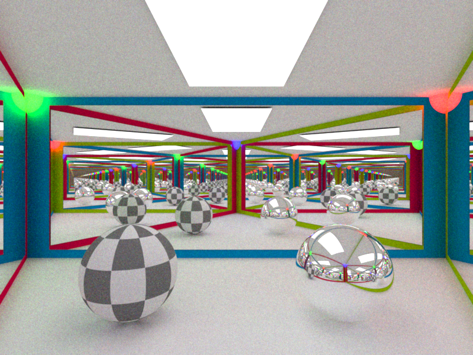
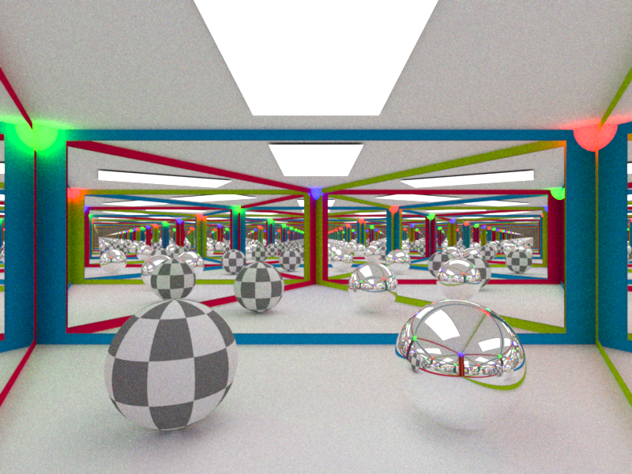
**Comparison: Cornell Box**
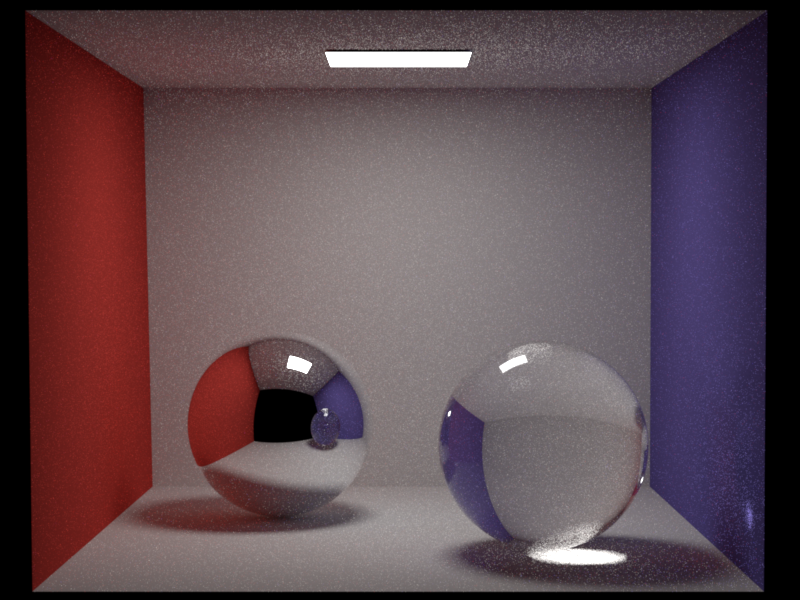
**Comparison: Table**
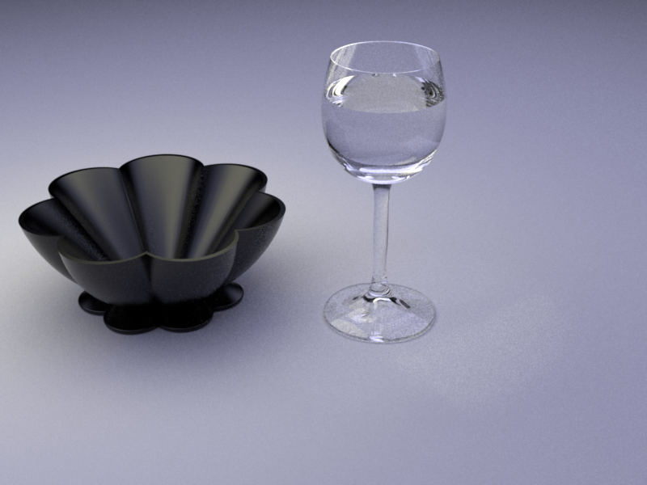
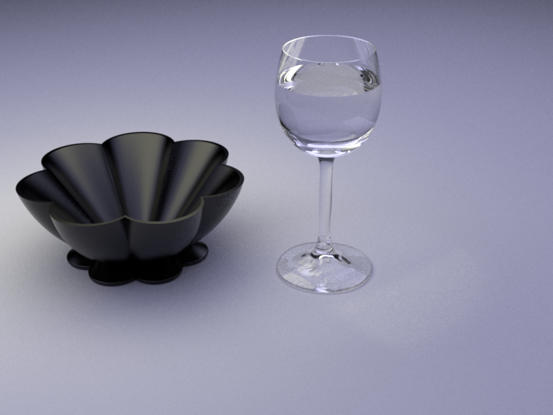
# Part 3: Photon Mapping
**Time spent on this task:**
240 min
## Photon Emission from Shape Area Lights
**Describe your implementation of `AreaEmitter::samplePhoton(...)`.**
First, using `sample1`, I sample a point `p` on the emitter's surface with probability density `pdf`.
Next, using `sample2`, I sample an outgoing direction `wo` by sampling the brdf at `p`.
Finally, I return `PI * eval(p) / pdf` as the power of the emitted photon according to the instruction.
## Photon Tracing and Storage
**Describe your implementation of `PhotonMapper::preprocess(...)`.**
We initialize `currPhotonCount = 0` to count the current number of photons stored and `m_emittedPhotonCount = 0` to count
the number of photons emitted.
We emit and trace photons in a `while` loop, which stops when `currPhotonCount == m_photoCount`.
In the `while` loop, we randomly choose an emitter and sample a photon from it.
We then trace the emitter in an inner `while` loop, which breaks when Russian Roulette fails.
Before entering the inner `while`, we initialize throughput `t` to 1.
In the inner loop, we first check whether the ray has an intersection with the scene.
If there is no intersection, we break.
Then we do Russian Roulette with probability of success equal to `std::min(t, 0.99f)` to determine whether to stop path tracing.
If Russian Roulette succeeded, we update `t` and trace the current ray. If there is an intersection, and the intersection point `p` is on a diffuse surface, we push a photon record,
whose power is the power that the sampled emitter contributes to `p`.
Next, we sample a new direction by sampling the brdf at `p`. We update `t` and the current ray accordingly and continue looping.
## Rendering/Radiance Estimation
**Describe your implementation of `PhotonMapper::Li(...)`.**
We trace the photons in a `while` loop, which breaks when Russian Roulette fails. We initialize throughput `t` to 1.
In the while loop, we first check whether the ray has an intersection with the scene.
If there is no intersection, we break.
If there is an intersection, and the intersection point `p` is on an emitter, we add the contribution of the emitter from 'p' to the returning value.
Next, if the intersection is a diffuse surface, we compute and add the contribution of the photons within radius `m_photonRadius` around `p` to the returning value.
Note that the power of each photon should be devided by the number of emitted photon `m_emittedPhotonCount`.
Then we do Russian Roulette with probability of success equal to `std::min(t, 0.99f)` to determine whether to stop path tracing.
If Russian Roulette suceeded, we update `t` and sample a new direction by sampling the brdf of the mesh.
We update `t` and the current ray accordingly.
## Validation
**Comparison: CGL Triangle**
**Comparison: Cornell Box**
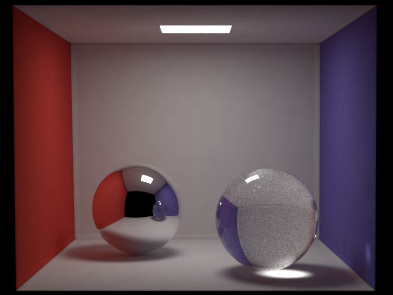
**Comparison: Table**
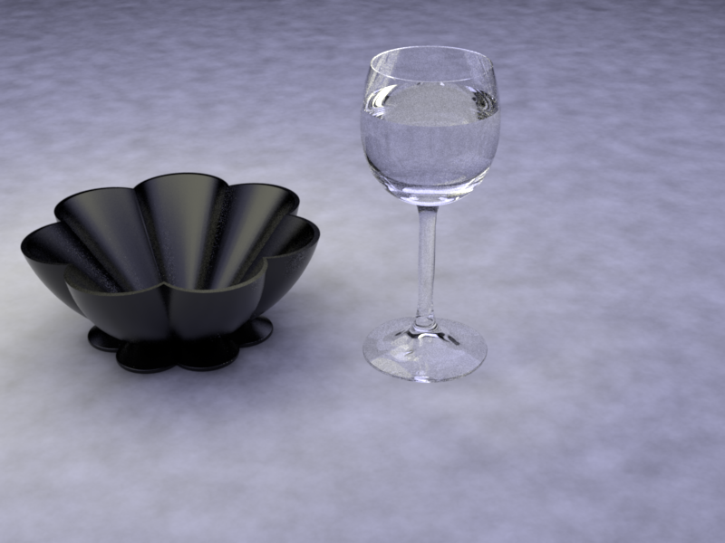
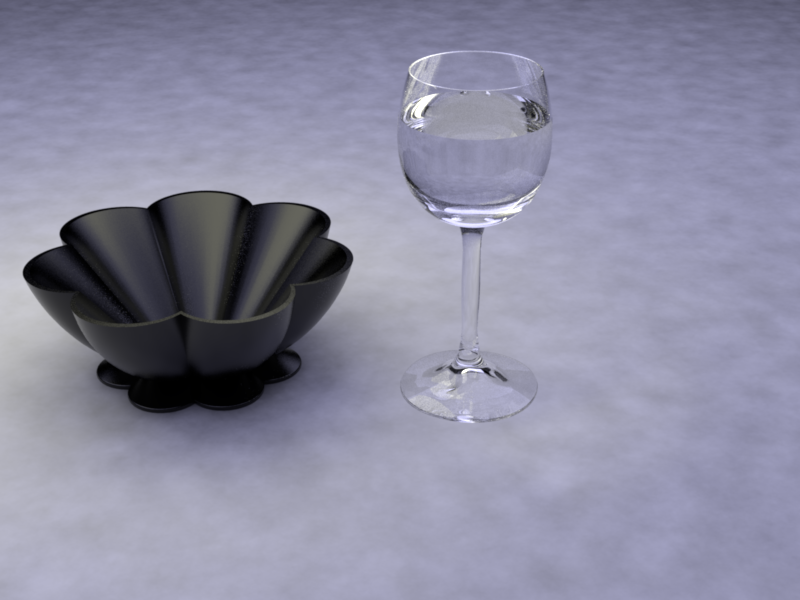
**Comparison: Clock**
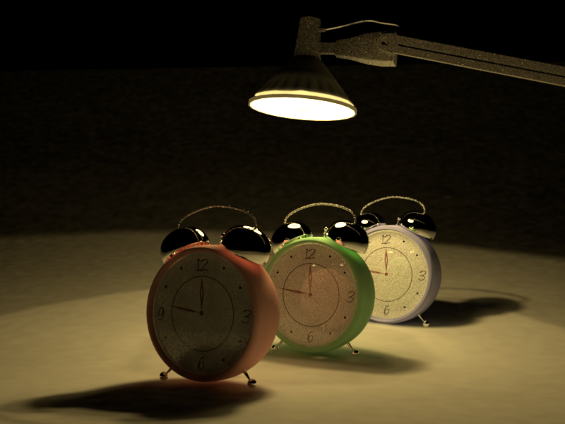
# Feedback
**Use this section to provide feedback about this assignment (each task, the handout, Nori, etc.). We appreciate your opinions to help improve future homeworks and projects.**
The cgltri_pmap.xml case is tricky. I don't see why doing Russian Roulette before or after pushing photon could make a difference in converging.
# Supplementary
* For each task, please note down the time you spent working through it and use at least a few sentences to describe your implementation. If applicable, also report the problems you encounter (e.g. whether or how it's solved, what is the difficult part).
* Please let us know to what extent your code is working (e.g. you only managed to work through part of this assignment, or your solution doesn't operate as expected in some corner cases). We encourage you to share your thinking process, and points will be granted based on your description even if the code is not 100% functioning.
* Nori generates both EXR and PNG format output. Please use PNG for image comparison in the report.
* This report template uses [Markdeep](https://casual-effects.com/markdeep/), which supports Markdown syntax in HTML file. For example usage, please refer to the [official demo document](https://casual-effects.com/markdeep/features.md.html).
* LaTeX is also supported for typing mathematical formulas:
$$
L_o(\mathbf{x}, \omega_o) = \int_{\Omega} L_i(\mathbf{x},\omega_i)\, f(\mathbf{x}, \omega_i, \omega_o)\, |\cos\theta_i|\, \mathrm{d}\omega_i
$$


 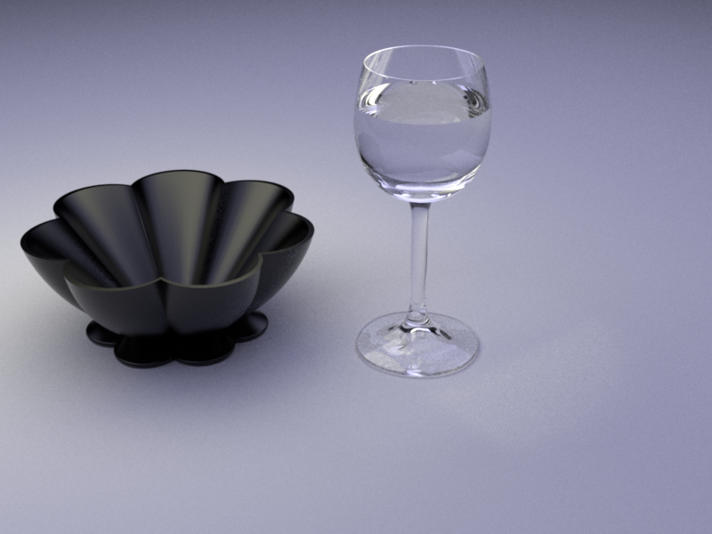
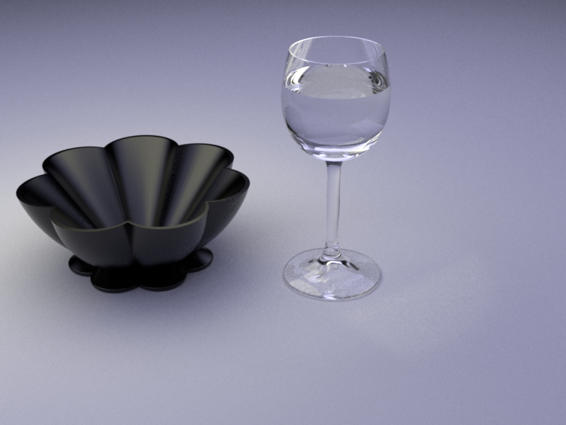